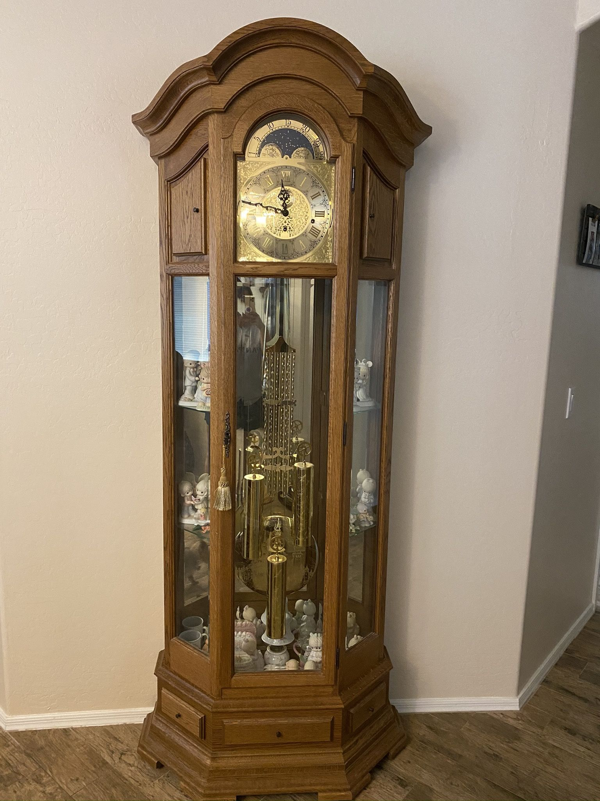
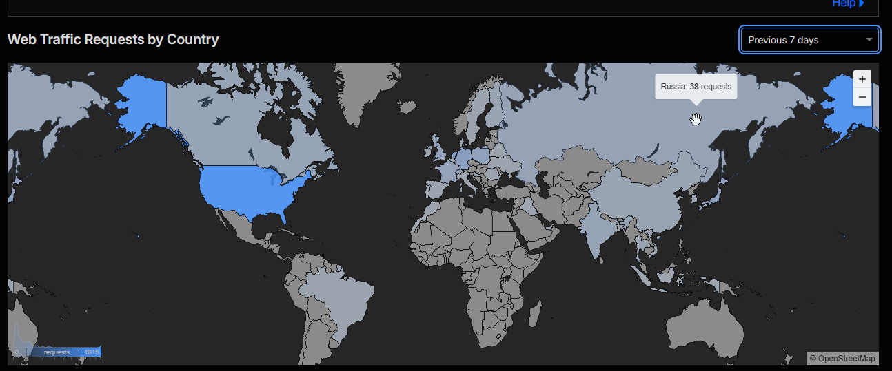

Captains Log

July 7th 2026
Name 100 Women
A guy at work was watching a podcast/youtube show and they had a challenge. Can you name 100 recognizable women, not just people you know, but people that everyone would know? Of course I can!
There has to be name for a problem I seem to have a lot. In any situation where I have to name something specific or a person I can see them, and I can sometimes see the first letter of their name, but I cannot seem to finalize the thought. Whenever it's not something specific like this I know it right away. The second there are some kind of stakes or someone waiting on me, I just cannot come up with it.
As an example my entire childhood I grew up listening to the band Queen. My dad loved them, my family loves them, I love them. I have probably listened to every song they have ever made a hundred times. I know that the singer's name is Freddie Mercury, it comes to me, its a household name. Recently though someone asked me what his name was. I just couldn't come up with it. I could envision his face, his crooked teeth (which he was known for), and even hear their songs in my head, but because someone was looking me in the face I could not for the life of me come up with what it was!
I don't think it is like test taking anxiety, becuase I don't really have a problem with that. I do well in interviews as well, its just something like this. I worry it's due to getting older. I used to not have the issue, but I feel as I get older I struggle more and more with remembering peoples names.
Anyway, here is my list!
- Michelle Obama
- Oprah Winfrey
- Jennifer Aniston
- Angelina Jolie
- Angelica Pickles
- Celina Qintinea
- Jenna Marbles
- Celine Dion
- Simone Biles
- Jennifer Lawrence
- Alexandria D’Addario
- Martha Stewart
- Margo Robbie
- Paula Deen
- Selena Gomez
- Carly Simon
- Jenny McCarty
- Miranda Cosgrove
- Martha Washington
- Sabrina Carpenter
- Megan the Stallion
- Taylor Swift
- Madonna
- Jennifer Lopez
- Kim Kardashian
- Chloe Kardashian
- Kendel Jenner
- Courtney Kardashian
- Paris Hilton
- Pamela Anderson
- Jtara McGee
- Dolly Parton
- Carmen Electra
- Mila Kunis
- Halle Barry
- Raven Simone
- Sarah Michell Geller
- Allison Brie
- Milania Trump
- Nancy Pelosi
- AOC
- Mariah Carey
- Jamie Lee Curtis
- Jamie Presley
- Cameron Diaz
- Sophia Vergara
- Hilary Clinton
- Kamala Harris
- Britney Spears
- Britney Murphy
- Britney Griner
- Caitlyn Clark
- Casey Plum
- Farrah Faucet
- Farrah Abrams
- Sue Bird
- Hillary Duff
- Ashley Olson
- Mary Kate Olsen
- Priscila Presley
- Anna Kendrick
- Gweneth Paltrow
- Emma Stone
- Liv Tylor
- Alicia Silverstone
- Aubrey Plaza
- Tina Fey
- Amy Pohler
- Amy Schumer
- Sandra Bullock
- Courtney Cox
- Lisa Kudrow
- Olivia Rodrigo
- Sophie Turner
- Mia Hamm
- Nikki Glasser
- Renee Zellweger
- Carrie Fisher
- Carrie Underwood
- Lanie Wilson
- Shania Twain
- Gwen Stefani
- Trisha Yearwood
- Chanel Westcoast
- Faith Hill
- Meryl Streep
- Ann Hatthaway
- Christina Ricci
- Christina Aguilera
- Alicia Keys
- Winona Ryder
- Olivia Munn
- Ariel Winter
- Lucy Liu
- Jada Pinkett Smith
- Beyonce
- Gal Gadot
- Chelsea Handler
- Sarah Palin
- Sarah Paulson
Upcoming Trip

My step-dad passed away in 2012. My mother was remarried last year and her new husband is a heavy equipment operator. He typically works at mining sites and that unfortunately is not usually close to where they live in WV. As a result they purchased a really nice camper and rent a campsite near the work location.
It has been nearly 6 months that they have been living in a small town near the WV/Kentucky border. When that job finishes, which should be soon as far as I can tell, they will have to travel to another job site, also not near where they live.
My sister lives in WV near where my mom's house is. So she is going to let my sister take over the mortgage and move her stuff into storage. Then when the house is paid for, My sister can keep it, and my mom and her husband are going to buy a tiny house, or a large shed and convert it to a house. They also plan to purchase land somwhere, though they do not yet know where that will be.
I think that sounds kind of cool to be honest. Katie and I are thinking of selling our hosue in a few years and buying some property. We don't plan on buying a tiny house, but we are planning on potentially buy a modular house or something along those lines.
Anyway, my mom and step-dad bought a grandfather clock made in the black forest of germany when we were stationed overseas. She has had the clock for nearly 30 years but now has nowhere to put it. She always planned on leaving it to me/Seth someday so she has asked me to pick it up and bring it to my house now.
I'm excited to get it, I really like it and grandfather clocks in general. I am not however looking forward to the trip to pick it up. I did something similar recently when my aunt passed away. I travelled to a nearby town in Pittsburgh and picked up a grandfather clock she had, put it in the back of my truck and brought it home to the Pittsburgh area. The clock wasn't too big, or heavy, but the drive was nerve wracking because I was worried about breaking it.
Mom's clock though is bigger, heavier, and has more pieces. I'm worried about moving it from WV back home. Katie thinks we should rent a uhaul, I'm not sure it will help with the move or not, except I wouldn't be abel to see it as we drive. I think I'll proably just put it in the back of my truck anyway.
Website Visits
I was checking on the stats from my new domain/website recently. I was shocked to see that I have over 400 unique hits. This is by no means an indicator that I'm blowing up, but it is way more than I expected to ever see.
I'm a little worried that I have a few hits from Russia, China, and India. I'm hoping its not indicitive of a problem. I don't know how or why someone from there would be visiting. If their intentions are honest, then I welcome them! If not, well, I just hope they don't find anything worth causing problems over! That's not directed at any one in particular, its more just caution.
